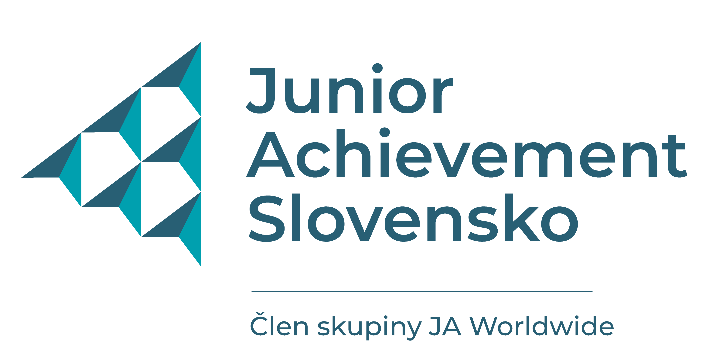

+++
title = "Junior Achievement Slovensko - Office manažérka"
slug = "82"
+++
<div class="container">
    <div class="row justify-content-center py-5">
        <div class="col py-5">
            <h1 class="text-center">Pracovná ponuka už nie je aktuálna</h1>
            <p class="text-center"><a href="..">Aktuálne flexibilné pracovné ponuky</a></p>
        </div>
    </div>
</div>
<!--
<div class="container mb-5">
    <div class="row justify-content-around">
        <div class="col-6 col-md-2 mt-3">
        </div>
        <div class="col-md-8">
            <h1>Junior Achievement Slovensko</h1>
          <h2>Office manažérka</h2>

            <p>
                <strong>Miesto: </strong>Bratislava<br/>
                <strong>Forma: </strong>TPP (polovičný, skrátený úväzok)<br/>
                <strong>Flexi faktor: </strong> skrátený úväzok - 20 hodín/týždeň<br/>
                <strong>Plat: </strong>650 EUR/brutto<br/>
                <strong>Očakávaný nástup: </strong>ihneď, dohodou<br/>
                <strong>Dátum pridania ponuky: </strong>1.8.2023<br/>
            </p>
            <h2>O firme </h2>
            <p><a href="https://www.jaslovensko.sk/" target="_blank">www.jaslovensko.sk </a>
      </p>
     <p>Junior Achievement Slovensko, n.o. (JA Slovensko) pomáha už viac ako 30 rokov učiteľom rozvíjať u 
       žiakov základných a stredných škôl podnikavosť, ekonomické myslenie, finančnú 
       gramotnosť a zručnosti potrebné pre uplatnenie sa na pracovnom trhu, vrátane digitálnych zručností. </p>
          <p>Naše vzdelávacie programy JA Slovensko podporujú podnikateľské a ekonomické myslenie a ponúkajú preventívne 
            riešenia pre zamestnanosť mládeže. </p>
          <p>Sme súčasťou celosvetovej siete 115 krajín JA Worldwide a súčasťou siete 41 európskych krajín JA Europe. 
            Už 100 rokov po celom svete prinášame skúsenosti v oblasti pracovnej pripravenosti, finančnej 
            gramotnosti a podnikania. </p>
          <p>Junior Achievement Worldwide je už štvrtý rok po sebe v prvej desiatke najvýznamnejších mimovládnych organizácií vo svete. </p>
          <p>Junior Achievement Worldwide je už druhý rok po sebe nominovaná na Nobelovu cenu mieru za rok 2023 (aj 2022) za rozvoj mladých ľudí na celom svete.</p>
   
          <h2>Náplň práce</h2>
         
         <ul>
           <li>zabezpečenie chodu celého BA officu </li>
           <li>evidencia došlej a odoslanej pošty </li>
           <li>príjem a evidencia došlých faktúr </li>
           <li>podpora riaditeľky organizácie (administratíva) </li>
           <li>podpora organizácie v HR oblasti </li>
           <li>zadávanie inzercie, príprava podkladov pre spracovanie dochádzky, vyhotovovanie zmlúv, dodatkov, ukončení pracovného pomeru, 
             preberacích protokolov a pod. </li>
           <li>starostlivosť o infolinku a zber informácií </li>
           <li>starostlivosť o všeobecnú emailovú adresu </li>
           <li>zabezpečenie komunikácie so správou budovy </li>
           <li>zabezpečenie chodu kancelárie </li>
           <li>príprava zasadacej miestnosti, občerstvenia, zabezpečenia kancelárskych potrieb</li>
           <li>komunikácia s dodávateľmi </li>
            <li>ostatná agenda riaditeľky </li>
           <li>potvrdzovanie termínov stretnutí, spracovanie listov a pozvánok, a pod. podľa potreby.</li>
         </ul>

           <h2>Požiadavky</h2>
          
      <ul>
        <li>Office 365 - mierne pokročilý/pokročilý </li>
        <li>Anglický jazyk - B1 úroveň </li>
        <li>ostatné Ťa radi naučíme</li>
                  </ul>
         
             <h2>Doplňujúce info</h2>     
<p>Hľadáme človeka, ktorý vidí v poslaní našej neziskovej organizácie zmysel a záleží mu na zlepšovaní 
  vzdelávania na Slovensku. Tak ako my vzdelávame tisíce študentov ročne na základných a stredných 
  školách, ponúkame možnosť naučiť sa do ďalšej praxe množstvo vecí. Budeš stáť pri najdôležitejších 
  udalostiach v našej organizácií počas celého roka, môžeš byť tieňom našej riaditeľky, ktorá Ti dá 
  priestor na získanie množstva skúseností a rozvoja 
  tvojho talentu v office a HR oblasti. A možno aj v ďalších, ak sa budeš chcieť ďalej rozvíjať.
      </p>

            <h2>Ďalší postup</h2>
<p>Kontaktujte nás prosím emailom na:  <a href="mailto:slovakova@jaslovensko.sk">slovakova@jaslovensko.sk</a> 
 </p>

        </div>
        <div class="col-md-2"></div>
    </div>
    <div class="row">
        <div class="col offset-md-2 mt-5">{{< back >}}</div>
    </div>
</div>
-->
